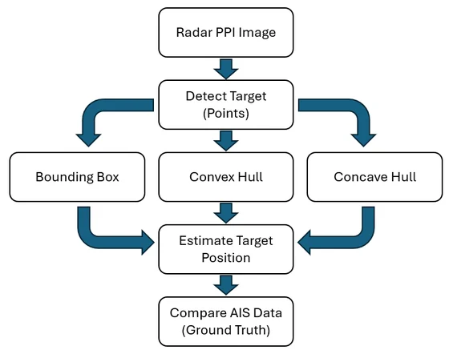
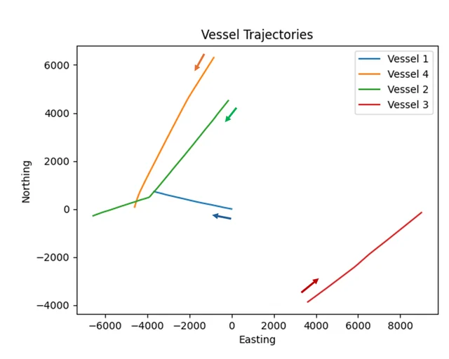
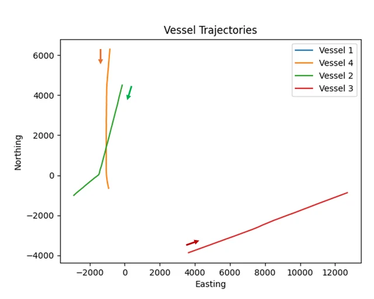
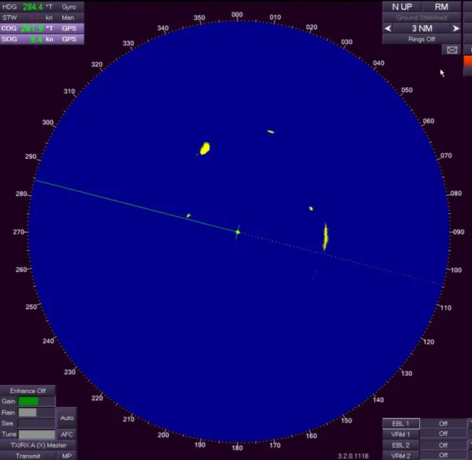
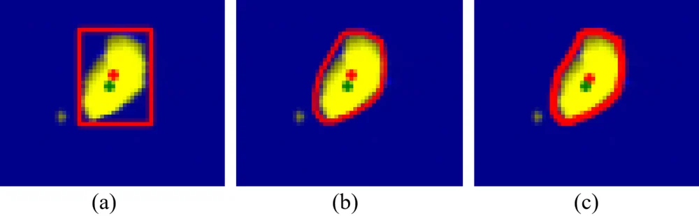
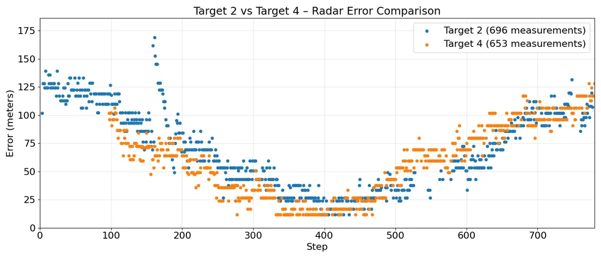
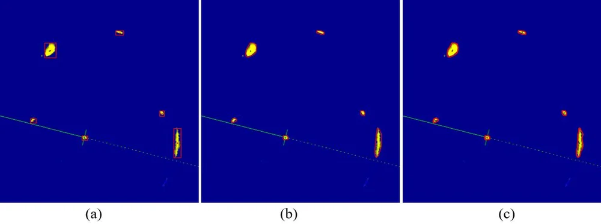

Where exactly is the ship inside a radar echo? This study compares three ways to turn a blob of echo pixels into one position (bounding-box centre, convex-hull centroid, concave-hull centroid) and checks each against AIS ground truth.
Concave hull error58–70 mmean, Targets 4 and 2
vs bounding box−12.7%Target 2 mean error
vs convex hull−2.1%Target 2 mean error
Azimuth correction4.5°global minimum
Real data
DLR Baltic Sea campaign: X-band radar, 781 synchronized scans, four ships with AIS.
Controlled
Same segmentation and the same 4.5° bias correction for all three methods.
Lightweight
No deep learning: O(n) to O(n log n) geometry that runs in real time on embedded VTS / ASV hardware.
1 · Introduction
Why Localization from Radar Echoes Is Hard
Vessel Traffic Services and autonomous surface vehicles fuse radar PPI images with AIS. Two systematic errors persist:
Irregular echoes
Sea clutter, multipath gaps, superstructure shadowing and limited resolution make echoes non-convex, so naive centres drift away from the ship.
Azimuth bias (0°–5°)
Antenna misalignment, time delays or uncompensated motion rotate every radar position against AIS.
Gap. Bounding boxes, convex hulls and concave (α) hulls are all used in detection, segmentation and registration, but no study had compared their centres for ship localization in real X-band PPI images with synchronized AIS.
Related work: nearest-convex-hull classifiers, convex hull feature adaptation (CFA), concave-hull CFAR detectors for small sea targets, DeepHullNet, DLR radar–AIS datasets.
2 · Materials and Methods · Graphical abstract
The Framework

Segment yellow echoes in each PPI frame into per-target pixel sets Pi.
Convert pixels to metres around the PPI centre and rotate by the 4.5° azimuth correction.
Enclose each Pi with a bounding box, a convex hull and a concave hull.
Estimate the position as the box centre or the polygon centroid.
Compare with the AIS position of the same vessel in the same scan.
2 · Materials and Methods · Figs. 1–2
DLR Baltic Sea Radar and AIS Data

AIS absolute tracks

Relative to Vessel 1 (radar)
Vessel
COG
SOG (kn)
1 · own ship
280–285°
9.2–9.5
2
221° → 254°
20.6–21.1
3 · excluded
54–57°
16.5–16.7
4
209–216°
17.2–18.6
X-band, ~10 m resolution, 3 NM range, 781 scans (steps 0–780) synchronized with AIS (East / North in metres, COG, SOG, heading).
Radar co-located with Vessel 1 at the display centre. Vessel 3 leaves the 3 NM range after step 80 (seen in only 10% of frames), so it is excluded.
2 · Materials and Methods · Fig. 3
From PPI Pixels to Echo Point Sets

A sample PPI frame
3 NM = 5,556 m over a 470 px radius → 1 px = 11.82 m
RGB → HSV; keep yellow echoes, H/S/V from [10, 50, 50] to [50, 255, 255].
One 3 × 3 morphological closing, one dilation: close small gaps, keep the shape.
External contours (OpenCV RETR_EXTERNAL); drop contours under 16 px as speckle.
All pixels inside a contour form one echo set Pi, converted to metres around the PPI centre (528, 516).
Echoes of different ships rarely merge here; around step 180 a brief overlap causes a visible error spike in every method.
2 · Materials and Methods · Table 1
Finding the Azimuth Offset
Every echo pixel is rotated by a candidate θ (0°–5°, step 0.5°) before the centroids are matched to AIS. Hover a column for the values.
Range
Bias
Total error is lowest at 4.5° (11.81 px); Vessel 2 alone is lowest at 3.5°. The single global 4.5° is applied to all methods; time-varying bias is not modelled.
2 · Materials and Methods · Algorithms 1–3
Three Geometric Enclosures
Bounding box (AABB)
ĉ = ( (min x + max x)/2, (min y + max y)/2 )
O(n), no parameters. Empty corners pull the centre away on long, diagonal or irregular echoes.
Convex hull
ĉ = (1/6A) Σ (vk + vk+1)(xkyk+1 − xk+1yk)
O(n log n) (e.g. Graham scan). Follows the outline but fills every concavity.
Concave hull (α-shape)
Hα = ∂( ⋃ B(p, α) ) from a Delaunay triangulation
O(n log n). Keeps concavities; α = 0.1 in the paper. Large α approaches the convex hull.

Fig. 8: the same echo with (a) a bounding box, (b) a convex hull and (c) a concave hull; red + is the estimate.
2 · Materials and Methods · Interactive
Geometry Lab: Paint an Echo
Echo
α radius
Click or drag on the grid to add or erase echo pixels. Here α is the largest circumradius of the Delaunay triangles kept, in pixels; libraries scale α differently, so it is not the paper's 0.1.
3 · Results · Tables 2–4
Localization Error Against AIS
Statisticbounding boxconvex hullconcave hull
Target 2 (fast, manoeuvring)
80.51 → 71.85 → 70.32 m: −12.7% vs box, −2.1% vs convex.
Target 4 (stable, larger RCS)
59.37 → 59.18 → 58.44 m: −1.6% vs box, −1.3% vs convex.
3 · Results · Figs. 4–6
Error over the 781 Scans
Method

The U-shape follows the changing geometry between the ships and radar-cross-section modulation; the spike near step 180 is the brief echo overlap.
3 · Results · Table 5
How Sensitive Is the Concave Hull to α?
Target 2Target 4hover for ± std
α = 0.02
Too tight: overfits noise, +2.1% (T2) and +1.5% (T4).
α ∈ [0.05, 0.1]
Stable; α = 0.1 gives the lowest mean for Target 2.
α = 0.2
Approaches the convex hull: +2.7% and +2.4%.
4 · Discussion · Fig. 7
Why the Concave Hull Wins

Box
Empty corners → systematic centre bias.
Convex
No corners, but filled concavities pull the centroid toward the filled region.
Concave
Stays tight to the visible pixels: its centroid approximates their true centre of mass.
Limits: one dataset and radar, a fixed global azimuth correction, contour-based target separation, Vessel 3 excluded. Differences for Target 4 are small relative to the spread (std ≈ 29 m).
5 · Conclusions
Conclusion and Future Work
Concave-hull centroids give the lowest mean error: 70.32 m (Target 2) and 58.44 m (Target 4).
Up to 12.7% better than bounding boxes and up to 2.1% better than convex hulls.
A single 4.5° azimuth correction gives the best radar–AIS alignment for this setup.
Fast and parameter-light, the method suits real-time VTS and autonomous surface vehicles.
Next steps
Adapt α automatically
Combine hull features with machine learning
Track many vessels in dense traffic
5 · Conclusions
Check Questions
Why does an axis-aligned box misplace the centre of a long diagonal echo?
When would a convex hull and a concave hull give the same centroid?
At 3 NM, how far does an uncorrected 4.5° bias move a target?
Why does the improvement differ so much between Target 2 (12.7%) and Target 4 (1.6%)?
What happens to the concave hull as α grows, and why does that hurt?
Show answers
The box adds two empty corners on opposite sides; its centre is the box midpoint, not the centre of the pixels.
When the echo has no concavities: then the α-shape and the convex hull coincide.
d = 2r · sin(θ/2) = 2 × 5,556 × sin 2.25° ≈ 436 m, about 37 px.
Target 2 is faster and manoeuvres, so its echoes are more irregular; Target 4 is stable with a larger RCS, so all methods do similarly well.
It approaches the convex hull, fills concavities again and loses their benefit (+2.7% / +2.4% error at α = 0.2).
References
Selected References
J. S. Fowdur, M. Baum, F. Heymann, "Real-world marine radar datasets for evaluating target tracking methods," Sensors, vol. 21, no. 14, 4641, 2021.
S. Külcü, "Radar image-based object detection and tracking for autonomous surface vehicles," Turk. J. Marit. Mar. Sci., vol. 12, no. 1, pp. 35–47, 2026.
See the full article for the complete reference list. Figures are reproduced from the article.
Thank You
Comparative Analysis of Target Localization Accuracy in Radar PPI Images Using Geometric Enclosures
How to cite: Külcü, S. (2026). Comparative Analysis of Target Localization Accuracy in Radar PPI Images Using Geometric Enclosures. Konya Journal of Engineering Sciences, 14(2), 901–916. doi:10.36306/konjes.1812754